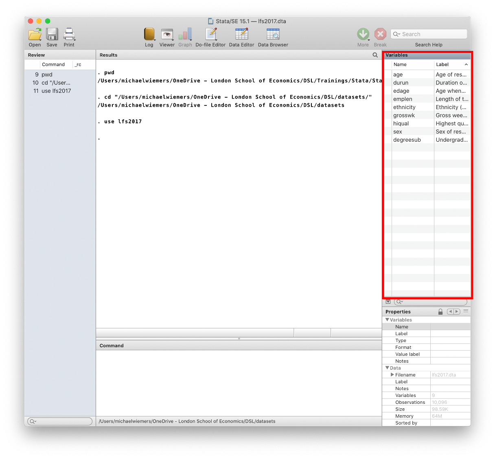
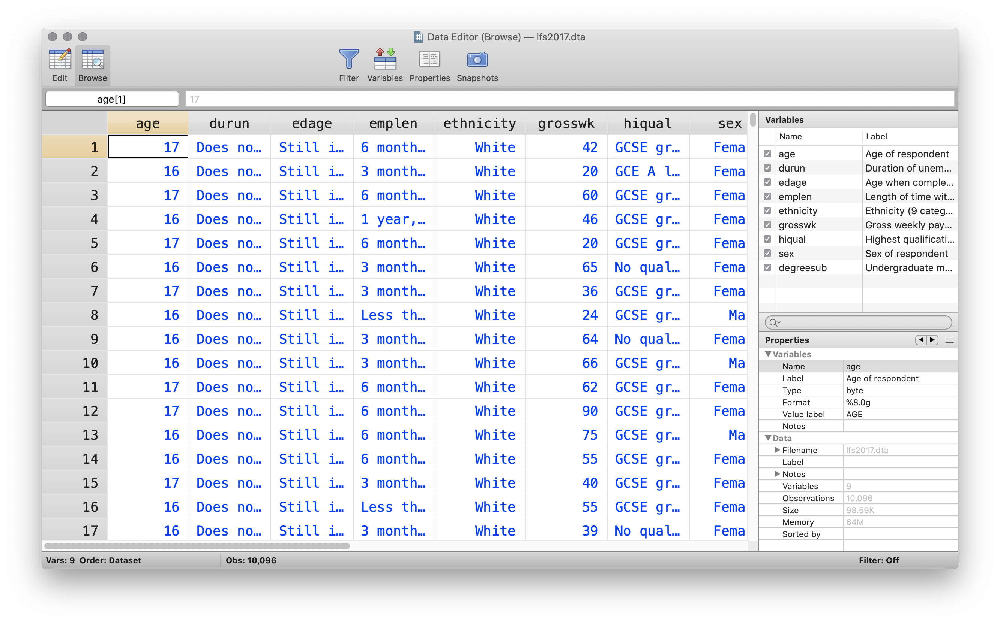
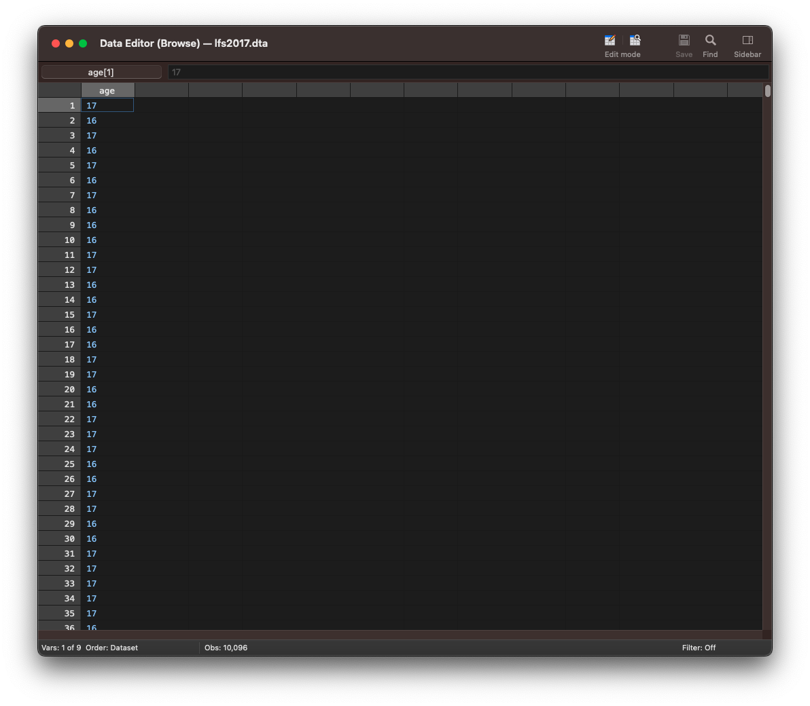
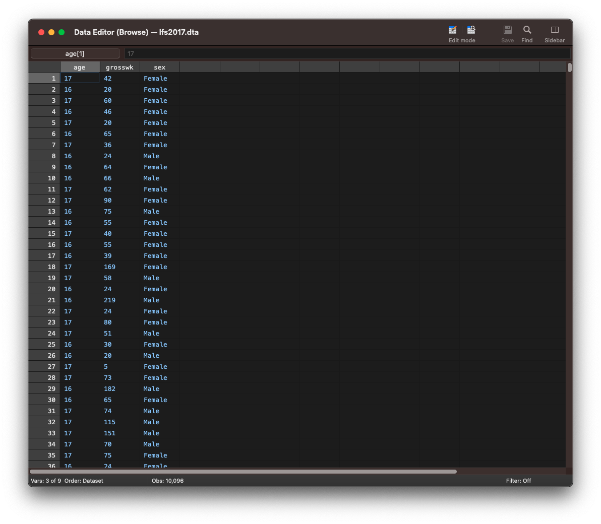
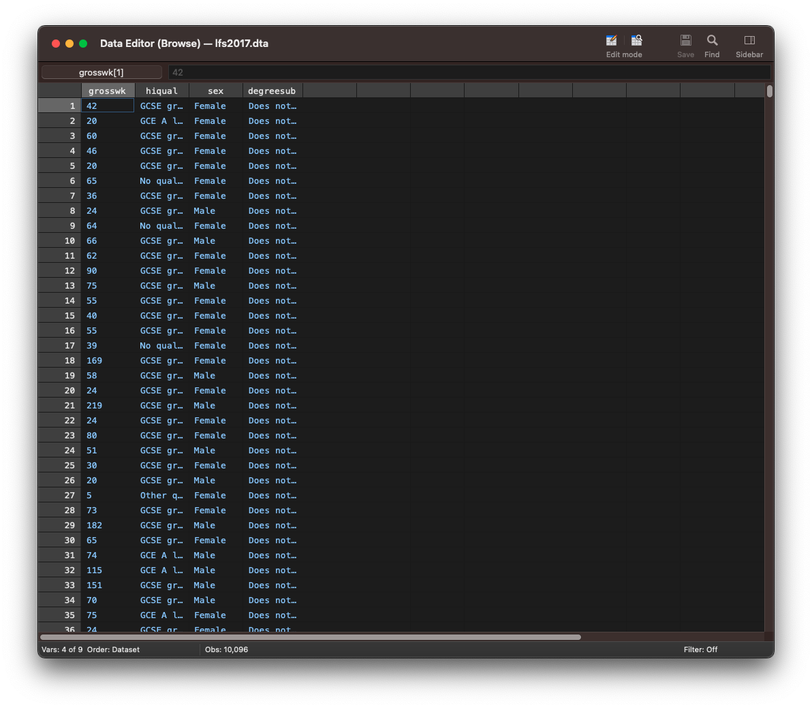

On this page
📋 Starting your session: confidence check
Once your workshop session has started, please complete this short questionnaire before beginning your first project during the workshop you attend today. It helps us understand how confident you feel before the session.
Open the starting confidence check ↗DIGITAL SKILLS LAB · STATA
Stata Fundamentals 1: Importing, inspecting and summarising data
A practical guide to setting up your workspace, loading datasets and exploring your data.
What is Stata?
Stata is a general purpose statistical analysis software, similar to SPSS. You can use it to preprocess, analyse and visualise data.
It is mostly used in research and particularly in the fields of economics, political science, and the social sciences in general.
In Stata you can either use the menus from the graphical user interface or write commands yourself. Most Stata users write commands and do not use the user interface. There are many advantages to learning commands. A script can be shared, edited by colleagues and collaborators and made available with publications. By using scripts for your research, you promote transparency and reproducibility. Since writing commands has many advantages and the majority of Stata users write scripts, we will also teach you how to write commands in this workshop series.
More information on how the session is run
What to do when getting stuck:- Ask the trainer if you struggle to find a solution.
- Use the help command. To get help with a specific command type help "command name"
- Search online. The statalist.org forum is usually the most useful resource.
- change the working directory
- import stata and csv documents
- print an overview of the variables in a dataset
- print a dataset and subsets of the data
- create a summary of continuous variables
Access to Datasets
Please use this link to get access to the datasets that you will be using in the exercises
Changing the working directory
When loading a dataset, Stata will always look for the file in the working directory, unless you specify the whole path to the file.
Although you can always specify the whole path to open a file that is not located in the working directory, it makes sense, to change the working directory to where your datasets are located at the beginning of your analysis. This will make it easier to load and switch between different datasets, since you only have to specify the file name and not the whole path to load a dataset.
Printing the current working directory
The working directory is displayed on the bottom of the main Stata window, just below the Command field.
You can also use the pwd command to print the working directory.
. pwd
/Users/michaelwiemersChanging the working directory
You can change the working directory by using the cd command as below. Notice that the path has to be put in quotations.
. cd "/Users/michaelwiemers/OneDrive - London School of Economics/DSL/datasets/"
/Users/michaelwiemers/OneDrive - London School of Economics/DSL/datasetsExercise: Changing the working directory
- Print the current working directory.
- Change the working directory to where the datasets lfs2017.dta, gapminder.csv and MCS_testscores.dta are located on your computer.
- Print the working directory again to verify that it has been changed.
Loading data into Stata
In this section you will learn how to import Stata datasets (.dta) and flat files, i.e. comma or tab separated value files (.csv or .tsv).
loading a .dta file (Stata dataset)
Now that Stata knows where your datasets are located, we can load a dataset without having to specify the whole path. We can simply refer to the file name.
We are going to load the lfs2017.dta file. This dataset contains data from the labour force survey from 2017. This dataset contains data on a persons age, sex, income, highest qualification and more.
We can load a .dta file, with the use command.
. use lfs2017You can see that the variables pane on the right now lists all variables in the lfs2017 dataset.

Loading a public dataset from stata-press.com
There are a number of datasets in stata format available from the stata-press.com website. You can use this link for a list of all available datasets (unfortunately, without description):
https://www.stata-press.com/data/r15/u.htmlTo load the auto dataset from the stata website, we use the webuse command followed by the name of the dataset.
. webuse auto
(1978 Automobile Data)Loading a csv file
We can use the import delimited command to import a csv file. In the example below we are importing the data stored in the gapminder.csv file, which is from the gapminder.org website, and lists unemployment, life expectancy and gdp per capita, for a sample of countries from across the world.
As you can see below, this command returns an error. This is because we already have a dataset loaded in Stata and the error warns us that by loading the new dataset, unsaved changes to the currently loaded dataset might be lost.
. import delimited "gapminder.csv"
no; data in memory would be lost
r(4);We have to first remove the currently loaded dataset with the clear command.
. clear
. import delimited "gapminder.csv"
(15 vars, 427 obs)Alternatively, we can add clear as an option to the import delimited command or any other command to import data.
. import delimited "gapminder.csv", clear
(15 vars, 427 obs)Exercise: Loading data
- Load the lfs2017 dataset using the use command.
- Load the citytemp.dta dataset from the Stata website.
- Load the csv file gapminder.csv.
- Notice how you can see the variables in the variables pane change every time you load a different dataset.
Inspecting a dataset
In this section, we will focus on a few commands to inspect a dataset.
We’re first going to re-open the lfs2017 dataset.
. use lfs2017, clearSummary of a dataset
The describe command produces a summary of a dataset. It lists the total number of observations, variables and the size of the dataset. Apart from the variable name and the variable label, which are also displayed in the Variables pane in the top right in the main Stata window, it also lists the storage type, display format and the value label.
The storage type refers to how the values of a variable are stored in memory. Different storage types can hold different types of information, i.e. numerical or text, and can store information of different size.
The display format refers to how the information is displayed, that is, the number of digits and decimals and the alignment.
The value label refers to the text labels that are being associated to the numerical values in the dataset. The sex variable has the numerical values 1 and 2, but when looking at the data you will see the labels ‘Female’ and ‘Male’ displayed. This is because the values 1 and 2 have received the corresponding labels ‘Male’ and ‘Female’.
describe
Contains data from lfs2017.dta
obs: 10,096
vars: 9 3 Aug 2020 17:50
size: 100,960
------------------------------------------------------------------------------------------------------------------------
storage display value
variable name type format label variable label
------------------------------------------------------------------------------------------------------------------------
age byte %8.0g AGE Age of respondent
durun byte %8.0g DURUN Duration of unemployment
edage byte %8.0g EDAGE Age when completed full time education
emplen byte %8.0g EMPLEN Length of time with current employer
ethnicity byte %8.0g ETHUKEUL Ethnicity (9 categories) UK level
grosswk int %8.0g GRSSWK Gross weekly pay in main job (Government scheme or employee)
hiqual byte %8.0g HIQUL15D Highest qualification (detailed grouping)
sex byte %8.0g SEX Sex of respondent
degreesub byte %8.0g UNCOMBMA Undergraduate main subject area
------------------------------------------------------------------------------------------------------------------------
Sorted by:Viewing the data
To display the entire dataset, we use the browse command. This will open the data editor.

Printing only a subset of variables
To only display the observations for a specific variable, type browse followed by the variable name. Here, we are only printing the values for the age variable.
browse age
To display a subset of variables, type browse followed by the different variable names separated with a space.
browse age grosswk sex
To display a range of variables type browse followed by the first variable, a hyphen and the last variable. The command browse grosswk - degreesub will print the observations for the variables starting from grosswk through degreesub in the order as appearing in the dataset from left to right.
browse grosswk - degreesub
Exercise: Inspecting data
- Open the census5 dataset from the stata website, which has data from the 1980 US census
- Print an overview of the variables.
- View the census datasets.
- Print only the marriage and divorce variables.
Summary statistics
The summarize command gives you a number of descriptive statistics like the mean, standard deviation and the minimum and maximum value. We can abbreviate the summarize command as sum.
sum grosswk
Variable | Obs Mean Std. Dev. Min Max
-------------+---------------------------------------------------------
grosswk | 10,096 521.7672 522.8757 5 23076You can add the detail option to the command to also display the percentiles, variance, skewness and kurtosis.
sum grosswk, detail
Gross weekly pay in main job (Government scheme or
employee)
-------------------------------------------------------------
Percentiles Smallest
1% 34 5
5% 90 5
10% 135 5 Obs 10,096
25% 250 5 Sum of Wgt. 10,096
50% 418 Mean 521.7672
Largest Std. Dev. 522.8757
75% 664 10250
90% 962 13846 Variance 273399
95% 1269 13846 Skewness 13.48147
99% 1923 23076 Kurtosis 448.2789To summarize more than one continuous variable, add all variable names after sum.
sum grosswk sex
Variable | Obs Mean Std. Dev. Min Max
-------------+---------------------------------------------------------
grosswk | 10,096 521.7672 522.8757 5 23076
sex | 10,096 1.520503 .4996042 1 2Customized summary statistics
The summarize command although useful to get a quick impression of a variable, doesn’t feature any options to select specific descriptives to be displayed in the output. The tabstat command allows such customisation of the statistics to be displayed.
tabstat age
variable | mean
-------------+----------
age | 42.37223
------------------------Exercise: Summary statistics
The MCS_testscore dataset contains data from the age 5 sweep from the Millenium Cohort Study, which examined the first year of primary schooling alongside childhood health, childcare, education, social and family circumstances.
- Open the MCS_testscore dataset.
- Use summarize to create a table with descriptive statistics for the variables pse to fsptotal.
- Use the tabstat command to create a table for the same variables
- Adjust your tabstat command to list the mean, standard deviation, standard error of the mean, min, max and the 25th and 75th percentile.
- Further adjust you command to ensure that the statistics are displayed in the columns.
📋 Leaving your session: confidence check
Please complete this short questionnaire just before you leave the workshop session. It helps us understand how confident you feel after the session. Continuing to another project in this session? Skip this questionnaire and complete the ending questionnaire only before leaving.
Open the leaving confidence check ↗